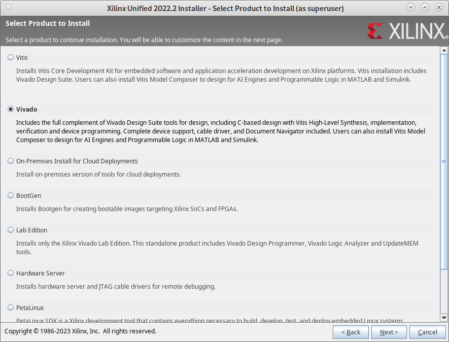
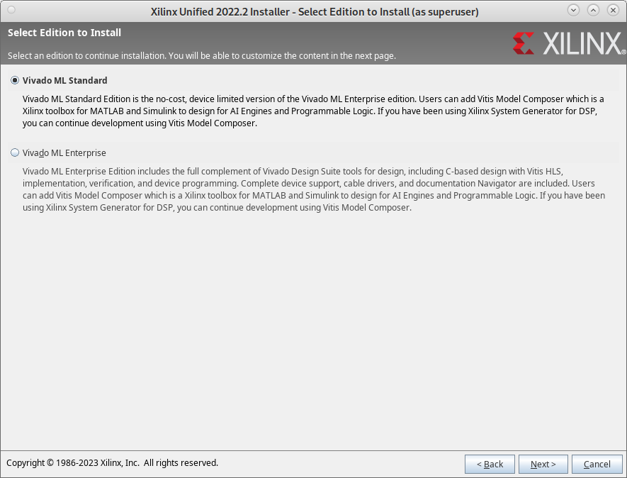
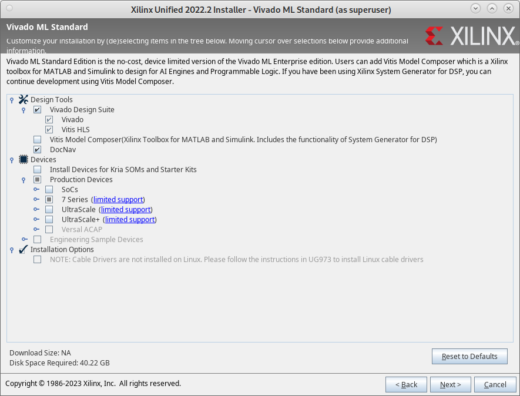

Setup
This page describes the tool setup required to work with rvlab. No setup is required when working with the university lab computers. It has been testes on Xubuntu 22.04.
Support status
Supported simulators:
Step |
Vivado XSim |
Questa-Intel |
Full Questa (university) |
|---|---|---|---|
RTL simulation |
supported |
supported |
supported |
Post-synthesis functional simulation |
supported |
(supported) |
supported |
Post-synthesis timing simulation |
timing mismatch |
(supported) |
supported |
Post-implementation functional simulation |
supported |
(supported) |
supported |
Post-implementation timing simulation |
timing mismatch |
(supported) |
supported |
Icarus with sv2v for simulation is currently not supported, but could be added in the future.
For synthesis and place and route, only Xilinx Vivado is supported.
Timing mismatch problem with Vivado XSim: SDF annotation does not work properly with Vivado XSim at the moment. For example, observe difference in the delay from TCK (FPGA input) falling edge to TDO (FPGA output) falling/rising edge between Questa and XSim. Debugging this further showed that /rvlab_fpga_top/tdo_flop_i CQ delay is not properly annotated. Make sure to use -debug all and -v 2 options for xelab or debugging. Debug output shows that the timing values of the library are overridden, when they are in fact not. A minimal test case should be created and submitted to Xilinx. With Questa, timing annotation works properly. The recommended -sdf_anno true switch to write_verilog in Vivado does not change the simulator behavior in this regard.
Install open-source components
Make sure you have a recent Python version (3.8+?) installed.
Install mako, pip and sphinx as Debian / Ubuntu packages. Also the libraries required by Vivado:
sudo apt-get install python3-mako python3-pip python3-sphinx
sudo apt-get install libtinfo6 libtinfo5 libtinfo-dev
Install PyDesignFlow , NoTcl, sphinx_rtd_theme, hjson and elftools using pip:
pip install pydesignflow
pip install notcl
pip install sphinx_rtd_theme
pip install hjson
pip install pyelftools
pip install mistletoe
pip install mako
Add the flow executable to the search PATH:
# Execute in every new shell before starting the flow.
export PATH=~/.local/bin:$PATH
As RISC-V tool chain, we recommend to use precompiled gcc binaries from riscv-none-elf-gcc-xpack. To make the binaries accessible, unpack the archive somewhere and add the bin/ sub directory to the PATH environment variable.
Install Xilinx Vivado (proprietary)
Install Xilinx Vivado ML Edition 2022.2 Standard (Free Version) from the Xilinx Download Center. You need to register a free Xilinx account for downloading and during installation, but no license is required. (The free version sends some metadata to Xilinx during usage.)
I recommend the web-based installer instead of the full download (80+ GB). With the shown installer options, the installation footprint is around 26 GB on disk (contrary to what the installer states). During installation, more free disk space (100+ GB?) is probably required.
  {kind=link}
{kind=link}
{kind=link}
During installation Vivado generates an installation dependent script settings64.sh which needs to be sourced. For the flow to find the FPGA library sources and binaries the XILINX_VIVADO and PATH variables need to be set, respectively:
# Execute in every new shell before starting the flow.
# Adapt the paths for your installation.
~/bin/Xilinx/Vivado/2022.2/settings64.sh
export XILINX_VIVADO=~/bin/Xilinx/Vivado/2022.2
export PATH=~/bin/Xilinx/Vivado/2022.2/bin:$PATH
Install Questa-Intel (proprietary)
Intel offers Questa-Intel Starter FPGA edition, a free version of the QuestaSim SystemVerilog simulator. QuestaSim is the preferred simulator for rvlab, but XSim, included in Vivado, can also be used. To run Questa-Intel on Linux, you need to register an Intel account and generate a free license for your computer using its MAC address. In order for Questa-Intel to find the license file you need to create a shell variable to point to the license file you received from Intel. Furthermore for the flow Questa-Intel needs to be added to the search path:
# Execute in every new shell before starting the flow.
# Adapt the paths for your installation.
export LM_LICENSE_FILE=~/bin/intelFPGA_pro/LR-113703_License.dat
export PATH=~/bin/intelFPGA_pro/22.4/questa_fse/bin:$PATH
Its main limitation seems to be a limit of 5000 module instances during simulation. This seems to be more than sufficient for rvlab RTL simulation, which presently uses around 195 instances. Netlist simulation is (probably?) not possible due to the limitation. The following TCL command in QuestaSim supposedly counts the number of module instances during simulation:
llength [find instances -recursive /*]